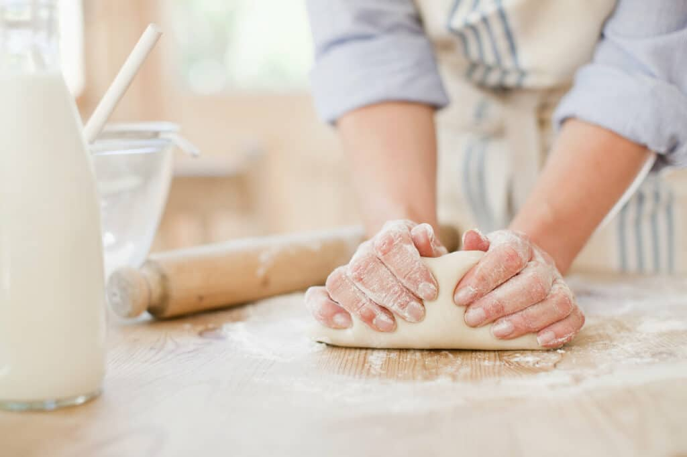

A kenyér az egyik legősibb és legfontosabb élelmiszer, amely szinte minden kultúrában alapvető táplálékforrást jelentett és jelent a mai napig. Az egyszerű, de nagyszerű étel a földművelés kezdeti időszakától napjainkig jelen van az emberek mindennapi életében. A kenyér készítése egy olyan folyamat, amely az alapanyagok egyszerűségében rejlik, de a megfelelő technikák alkalmazásával végtelen variációkban elkészíthető. A különböző gabonafélék, élesztő, víz és só keveréke, a megfelelő kelesztés és sütés eredményeként egy olyan ételt kapunk, amely nemcsak táplál, hanem hagyományokat is hordoz.
Alapanyagai
A kenyér alapanyagai közül a liszt a legfontosabb, mivel ő adja meg a kenyér szerkezetét. A leggyakrabban használt liszt a búzaliszt, mivel gazdag gluténban, amely segít a tészta rugalmasságában. Az élesztő egy élő mikroorganizmus, amely a tészta kelesztéséért felelős, és segít abban, hogy a kenyér levegős és könnyű legyen. A víz elengedhetetlen a tészta hidratálásához, mivel segít feloldani a lisztben lévő kemikáliákat, és aktiválja az élesztőt. A só ízesíti a kenyeret, emellett hozzájárul a tészta stabilitásához és a kelesztés szabályozásához. A cukor egyes kenyérreceptekben szerepel, mivel táplálja az élesztőt, így gyorsíthatja a kelesztést. A tejfélék, mint a tej vagy joghurt, lágyabbá és ízletesebbé tehetik a kenyér tésztáját. Opcionálisan olajat vagy vajat is adhatunk, amelyek segítenek a kenyér puhításában és gazdagabb ízt adnak neki. Egyes receptekben a kenyérhez fűszereket, például köményt vagy rozmaringot is adnak, hogy extra ízt biztosítsanak. A kenyérkészítéshez szükséges egyéb adalékanyagok között szerepelhetnek magvak, olajbogyó vagy sajt, amelyek szintén különlegesebbé tehetik a végeredményt.

Készítése
A kenyér készítése során fontos a precizitás, mivel minden egyes lépés hatással van a végeredményre. Miután a tészta összeállt, elengedhetetlen a megfelelő dagasztás, hogy a gluténhálózat jól kialakuljon és a tészta rugalmassá váljon. A kelesztés során az élesztőgázok emelik meg a tésztát, amely így könnyű és levegős lesz. A kelesztési időt nem szabad siettetni, mert a túl gyors kelesztés nem biztosítja a kívánt szerkezetet. Miután a tészta megkelt, következik a formázás, ami lehet egy egyszerű vekni, cipó, vagy bármilyen egyéb forma. Ezt követően a kenyér ismét pihen egy kicsit, hogy a formázás során keletkezett légbuborékok ne sérüljenek. A sütő előmelegítése is fontos, hogy a kenyér gyorsan elkezdjen sülni, így megmarad a kívánt ropogós héja. Sütés közben a tészta fokozatosan elkezd emelkedni, és a külseje szép aranybarna színt kap. A kenyér akkor kész, ha a teteje ropogós, a belseje pedig puhán rugalmas marad. A kész kenyeret hagyjuk kihűlni, hogy a szeletelés előtt megszilárduljon a szerkezete, és könnyebben vágható legyen.
előállítása
A kenyér előállítása során az alapanyagok összevonása az első lépés, melyet alaposan kell végezni a megfelelő textúra érdekében. Miután az összetevők össze vannak keverve, következik a dagasztás, amely fontos a tészta rugalmasságának kialakításában. A dagasztás során a gluténhálózat fokozatosan formálódik, amely az élesztőgázokat megtartja és így segíti a tészta emelkedését. Az élesztő aktiválása után a tésztát pihentetni kell, hogy felhabosodjon és elérje a megfelelő térfogatot. A kelesztési időtartam és a hőmérséklet befolyásolja a kenyér minőségét, ezért fontos a megfelelő környezet biztosítása. A második kelesztés után a tésztát formázzuk, hogy kívánt alakot kapjon, legyen szó cipóról, veknéről vagy zsákról. A kenyér sütésekor a tészta belső szerkezete tovább fejlődik, és a külseje ropogós, aranybarna lesz. A sütőben a hőmérséklet és a páratartalom biztosítja, hogy a kenyér kívül ropogós, belül pedig puha maradjon. A kész kenyérnek egyenletes színűnek és enyhén roppanósnak kell lennie. Miután a kenyér megsült, érdemes pihentetni, hogy a belső szerkezet stabilizálódjon, mielőtt felszeleteljük.
formázása
A kenyér formázása rendkívül fontos része a kenyérkészítésnek, mivel a tészta formájának megválasztása befolyásolja a végeredményt. Az első lépés a tészta felosztása, ha nagyobb mennyiségből dolgozunk, például több kisebb cipót készítünk. A formázás során figyelnünk kell arra, hogy a tészta ne veszítse el a belső levegőt, amit a kelesztés során nyert. A tésztát óvatosan, de határozott mozdulatokkal kell formálni, hogy a kívánt alakot elérjük, például hosszúkás veknire vagy kerek cipóra. A tészta széleit begyűjtjük, majd a közepénél összecsípjük, hogy szoros formát kapjunk. A formázás nemcsak esztétikai, hanem praktikai célokat is szolgál, mivel a kenyér formája befolyásolja a sütési időt és az egyenletes hőeloszlást. Ha kész a forma, érdemes egy kicsit hagyni, hogy a tészta még egyszer pihenjen és egy utolsó kelesztést végezzen. Néhány kenyér esetében a formázás során mintázatokat, például bevágásokat is készíthetünk, amelyek nemcsak szépítik a kenyér külsejét, hanem segítenek a hő egyenletes eloszlásában is. A formázott tészta ezután már kész a sütésre, és az alakja biztosítja, hogy a kenyér esztétikus és könnyen szeletelhető legyen. A megfelelő formázás tehát nemcsak a kenyér küllemét, hanem annak minőségét is alapvetően meghatározza.